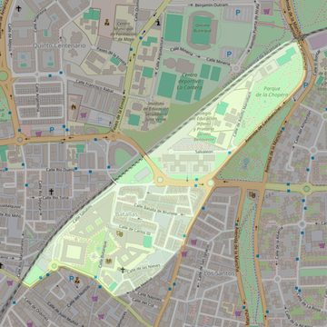

Nuestra Señora de Butarque
- Arciprestazgo
- Leganés
- Población
- Leganés
- Dirección postal
- Pza. Don José Ramos Zambrano, 1
- Código postal
- 28912
- Extensión
- 0,39 km² (39 ha)
- Teléfono
- 916 937 532
- Correo electrónico
- nsbutarque-leganes@diocesisgetafe.es
- Información demográfica
- De la parroquia · De la población (Leganés) · Del arciprestazgo (Leganés)


Descargar mapaLímites según decreto
"Partiendo de la confluencia del ferrocarril a Portugal con la calle Butarque, continúan por esta última hasta la calle del General Barrón; siguen por ésta y por las calles de Madrid y de Nápoles hasta la carretera de Leganés a Madrid; continúan por esta carretera hasta el ferrocarril de Portugal, siguiendo por el mismo en dirección Sur hasta la calle de Butarque, punto de partida" (Decreto de erección de 10-6-70)
SUGERENCIAS DEL PÁRROCO EN EL INFORME PARA LA VISITA PASTORAL: "PARTIENDO DE LA CONFLUENCIA DEL FERROCARRIL A PORTUGAL CON LA CALLE BUTARQUE (QUIZAS HABRIA QUE DECIR C/ SABATINI), CONTINUAN POR ESTE ULTIMO HASTA LA C/ GENERAL BARRON (HOY AV. DE LA UNIVERSIDAD); SIGUEN POR ESTA Y POR LAS CALLES DE MADRID Y DE NAPOLES HASTA LA CARRETERA DE LEGANES A MADRID (HOY AV. DE FUENLABRADA); CONTINUAN POR ESTA CARRETERA HASTA EL FERROCARRIL DE PORTUGAL, SIGUIENDO POR EL MISMO EN DIRECCION SUR HASTA LA CALLE DE BUTARQUE (O SABATINI), PUNTO DE PARTIDA. Nota: si no se incluye la calle Sabatini, el campus de la universidad Carlos III no pertenecería a ninguna parroquia.